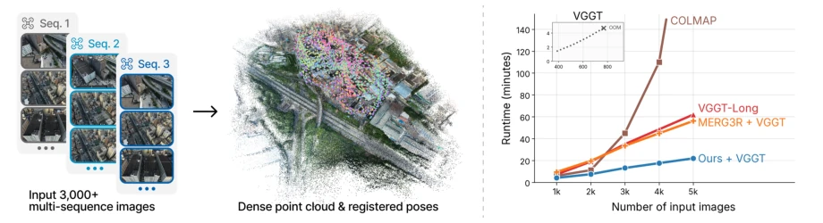
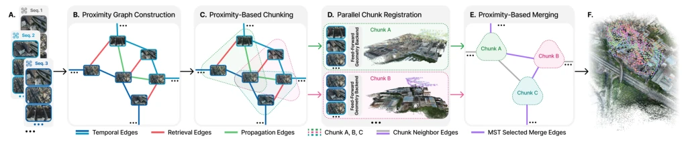
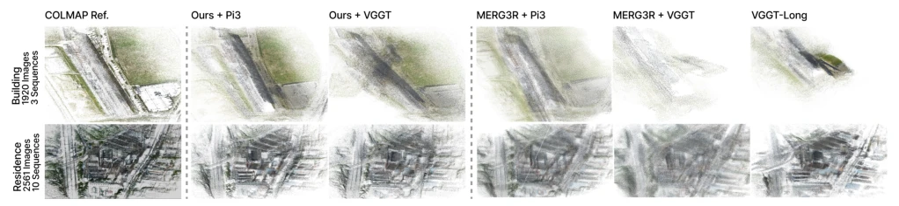
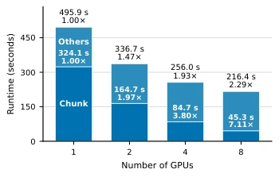

This paper attempts to address the scalability nightmare of neural geometric models on large-scale aerial data. G3AR employs graph-guided splitting, which sounds promising, given that full-context inference on thousands of images is indeed unrealistic. It decomposes the problem into chunks and uses graph theory to find connections, avoiding expensive global optimization. However, this approach works for regular scenes like aerial photography, but if switched to complex indoor environments, the graph might collapse directly. Moreover, although MST alignment is fast, once an edge is incorrect, errors propagate along the tree, which requires caution. Additionally, the paper also acknowledges the risk of high-weight erroneous edges caused by repetitive structures. Overall, it is a clever engineering solution, but generalization remains questionable, since incremental reconstruction is not performed and it relies on threshold settings.
Existing feedforward neural geometric models (e.g., VGGT [2025], Pi3 [2026], DA3 [2025]) can directly predict pose and geometry, but full-context inference is impractical for thousands of images. Long-context methods (e.g., VGGT-Long [2026], MERG3R [2026]) handle via chunking, but depend on chunk composition and topology, making it difficult to capture irregular non-local overlaps in multi-sequence aerial photography. Large-scale aerial photography spans multiple flights, lacking reliable global time order, overlaps may span strips or revisits. Existing methods require exhaustive matching or full-scene optimization to scale, which is inefficient. G3AR aims to adapt dense neural geometry through graph partitioning, utilizing a geometry-verified neighbor graph to guide chunking and alignment, without global optimization, thereby improving scalability.

Figure 1: G3AR registers thousands of multi-sequence aerial images into a coherent point cloud with lower runtime than prior long-context pipelines.
The G3AR process is divided into four steps. First, construct a geometry-verified neighbor graph, recovering local and non-local overlaps using time, retrieval, and propagation edges, via ALIKED and LightGlue matching, USAC/MAGSAC verification, retaining high-weight edges. Second, perform chunking based on the neighbor graph, using METIS partitioning and expanding boundaries to form overlapping chunks, ensuring shared images are used for 3D alignment. Third, compatible backend networks (VGGT/Pi3/DA3) process each chunk in parallel independently, predicting local pose and geometry. Finally, construct a chunk graph and extract the Maximum Spanning Tree (MST), utilizing Sim(3) transforms of shared images for lightweight assembly, without global pose graph optimization or bundle adjustment. This method supports multi-GPU parallelism and requires no retraining of the backbone network, significantly reducing VRAM usage.

Figure 2: Overview of G3AR. (A) Multiple aerial image sequences are provided as input. (B) Verified temporal, retrieval, and propagation edges organize the images into a proximity graph. (C) Graph partitioning and boundary expansion form bounded overlapping chunks. (D) A feed-forward geometry backbone predicts chunk-local camera poses and dense geometry in parallel. (E) A maximum spanning tree of the proximity-derived chunk graph selects shared-image Sim(3) alignments. (F) Composing the transformations registers the cameras and aligns the geometry in a common frame.
Tested on four real aerial scenes (Mill19, UrbanScene3D) and one synthetic scene (MatrixCity). Baselines include COLMAP, GLOMAP, VGGT-Long, MERG3R, etc. Metrics are ATE, runtime, and VRAM. Results show that G3AR, while maintaining full camera coverage, has ATE superior to VGGT-Long and MERG3R, with the DA3 variant achieving the lowest pose error. Multi-GPU scaling shows 8-card acceleration of 2.29x. Ablation studies indicate retrieval and propagation edges can significantly reduce error, and MST topology is superior to time chains. Additionally, although COLMAP has the highest accuracy, it takes the longest time, while G3AR achieves a better balance between speed and accuracy.

Figure 3: Building and Residence point clouds under matched local inference budgets. Graph-guided variants retain broader roof, facade, and ground extents than the displayed long-context baselines.

Figure 4: Scaling over four real scenes. Labels show mean runtime and mean per-scene speedup relative to one GPU.